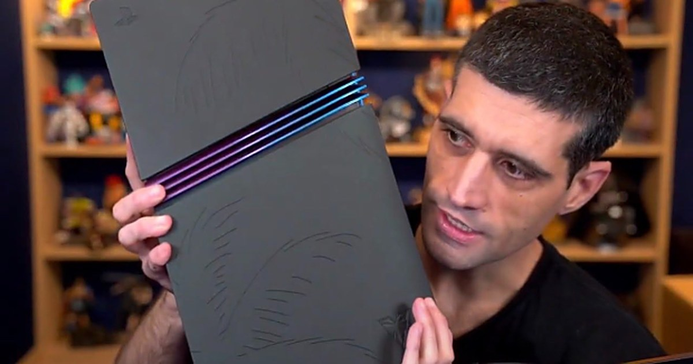

Rockstar made 100 custom GTA 6 PS5 Pros — and you can't buy one
Rockstar built a run of custom GTA 6 PS5 Pro consoles — dark plates, etched palms, neon Vice City stripes, each one numbered. They went to Heat players and streamers. They will never be sold.

Disclosure: this post contains affiliate links. I earn a commission on qualifying purchases.
Rockstar made the most desirable PlayStation on the planet this week, and then made sure almost nobody can have it. At least 100 custom Grand Theft Auto 6 PS5 Pro consoles exist — dark plates, etched palm trees, neon Vice City stripes, each one carrying its own serial number — and every single one is a gift. They are not for sale, and Rockstar has no plans to sell them.
The first wave went to Miami Heat players just before the November 19 launch, part of the team's Vice City-themed collaboration. Davion Mitchell, Nikola Jovic, Myron Gardner, and Keshad Johnson all posted their care packages to Instagram Stories, and the packages were serious: fitted hard flight cases holding the console, matching DualSense controllers, and a physical copy of the game.
The creators' batch
The second batch is going out now, to streamers and influencers. Streamer Davy Jones unboxed his live on YouTube, holding up the console for the camera — the etched palms across the dark gray plates, the teal-to-magenta stripes down the middle, the numbered Rockstar badge in the corner. His unit is number 96. Images from the unboxing were shared by the videotech account on X, which reported the size of the run, and the styling matches the Heat players' units exactly, confirming Rockstar produced a deliberate small run rather than a handful of one-off customs.
That matching design is the tell. This was planned as a single prestige object: one console, one look, a numbered badge under the Rockstar symbol, handed to athletes first and creators second. What remains unconfirmed is whether the creator batch is the same production run as the Heat batch or a second allocation on top of it — the reporting so far doesn't settle that, and neither Rockstar nor Sony has commented.
The part you can actually buy
The console is strictly promotional, and Rockstar and Sony have said nothing about a retail version despite years of fan requests for a proper GTA bundle or even just official faceplates. The limited-edition DualSense controllers are a different story: Sony and Rockstar released black and white versions for retail sale, and those have been available at major stores and PlayStation Direct.
So the split is deliberate. The controllers are the souvenir anyone can buy. The console is the status object — a thank-you to the people who made launch week the biggest the industry has ever seen.
Why now
The timing is the reward. Streams Charts called GTA 6 the largest game launch in livestreaming history, with Twitch peaking at 3,313,371 simultaneous viewers. PlayStation said the launch drove a record number of new systems coming online for the game's debut. Rockstar didn't need a special console to sell hardware — the game did that on its own. The custom Pros are a victory lap in physical form, handed to the athletes and creators who carried the launch, and a reminder to everyone else that the closest they'll get is the controller.
Sources: Rockstar is handing out 100 of these gorgeous limited-edition GTA 6 PS5 consoles, and you can't buy one (TweakTown) · 100 limited-edition GTA 6 PS5 Pro consoles released by Rockstar, but retail bundle unlikely (Notebookcheck) · First Look at Rockstar's Custom GTA VI PS5 Pro Consoles, Limited to Just 100 Units (Twisted Voxel) · Rockstar is sending exclusive GTA VI-themed PS5 Pros to content creators (Instant Gaming)
Gear up: Razer — mice, keyboards, headsets and laptops.